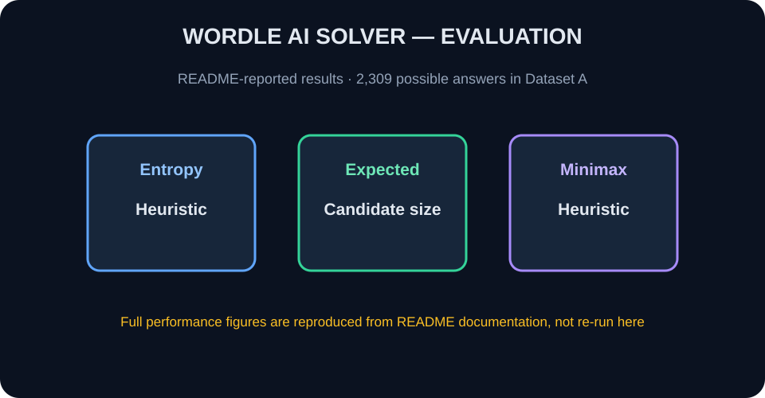

Choosing guesses by measuring the information they reveal
I built a Wordle environment and a set of agents that use feedback to narrow possible answers. The agents compare candidate guesses with three heuristics, then update the remaining answer set after each guess.
My contribution
- Implemented the game state and environment, including guess history, feedback and the six-guess limit.
- Built duplicate-letter-aware feedback and a vectorised pattern matrix with 243 possible feedback patterns.
- Implemented entropy, expected-size and minimax search agents, alongside random and alphabetical baselines.
- Added tests and an evaluation script to compare solving performance.
Technologies
NumPy supports the feedback-pattern calculations; pytest is used for correctness and edge-case tests.
How it works
Keep the words that remain possible after the feedback received so far.
Split possible answers into feedback groups and score guesses by information gain, expected candidates left or worst-case group size.
Use the actual feedback to filter the candidate set before choosing the next guess.
A challenge I addressed
Repeated letters need careful handling: a guessed letter must not be marked yellow more times than it appears in the answer. The feedback function handles exact matches first, then allocates remaining letter counts to yellow matches.
Test example: feedback("geese", "abide") returns ----G, as expected by the test suite.
Evaluation results
| Agent | Win rate | Average guesses |
|---|---|---|
| Search · entropy | 100% | 3.672 |
| Search · expected size | 100% | 3.705 |
| Search · minimax | 100% | 3.803 |
| Random candidate baseline | 98.57% | 4.049 |
| Alphabetical candidate baseline | 97.57% | 4.316 |

Evidence and what I learned
This project demonstrates state modelling, heuristic design, edge-case handling, testing and the interpretation of algorithm trade-offs. The README reports that Dataset C slightly reduced average guesses for the search agents but increased computation time.